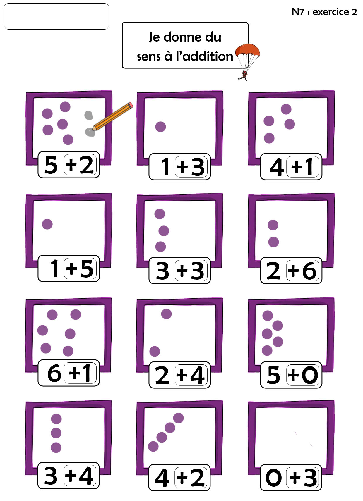

N7 - 2 — Touchez une case violette pour ajouter un point noir d’environ 8 mm. Les points utilisent uniquement des positions sûres dans la moitié droite, sans toucher le cadre ni les points imprimés. Le premier exercice reste inactif. Touchez un point noir pour l’effacer.

Touchez une des 11 cases actives pour ajouter un point.